谁再说像我 我生气了[尬笑]
[疑问]你们要气死刘佳梁吗哈哈哈哈哈哈哈哈 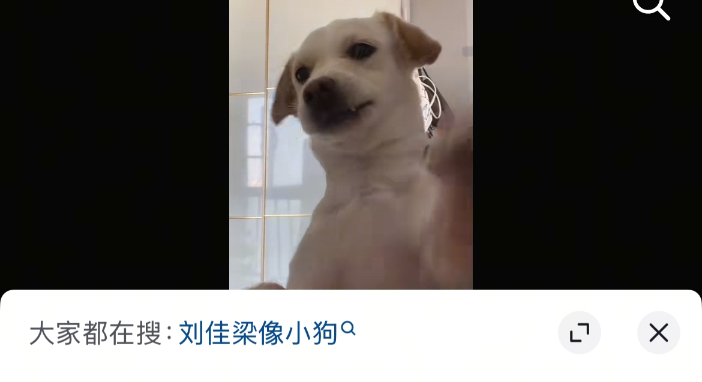
第一个说像刘佳梁的是天才嘛[调皮]
刘佳梁狗时候
它好配合 这要是我家狗早把我咬到医院去了[难过]
这不一模一样么 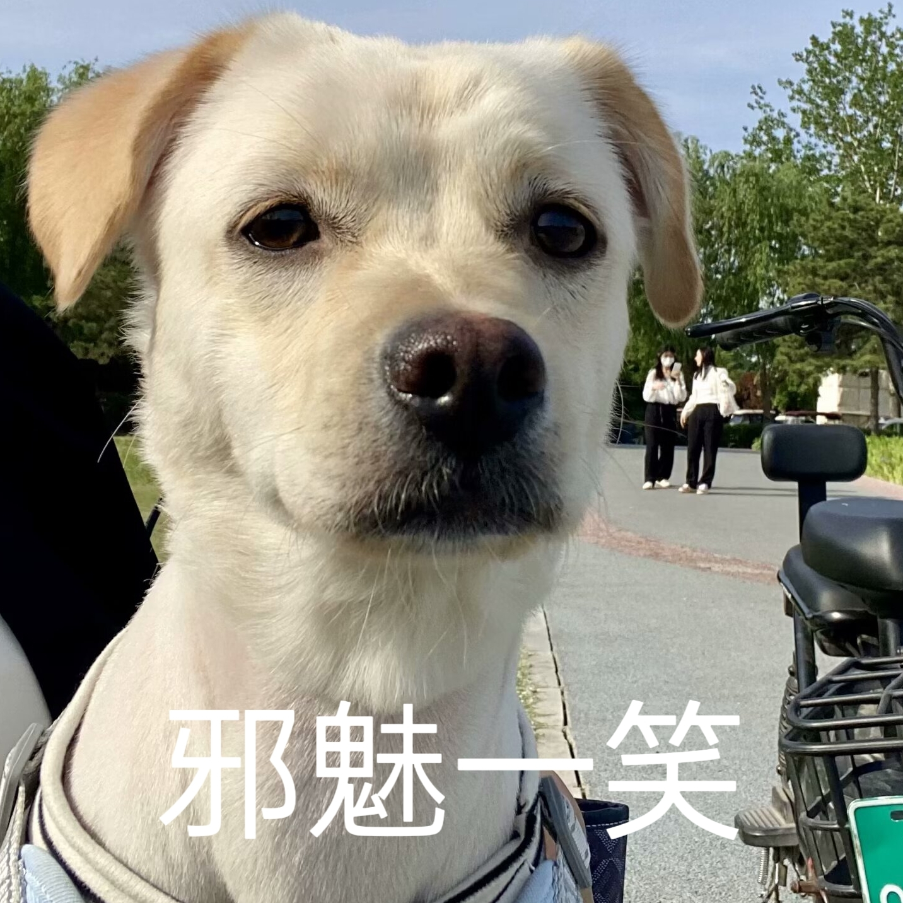
评论区怎么大家都有这个狗[流泪]我也想要
看起来命苦的感觉 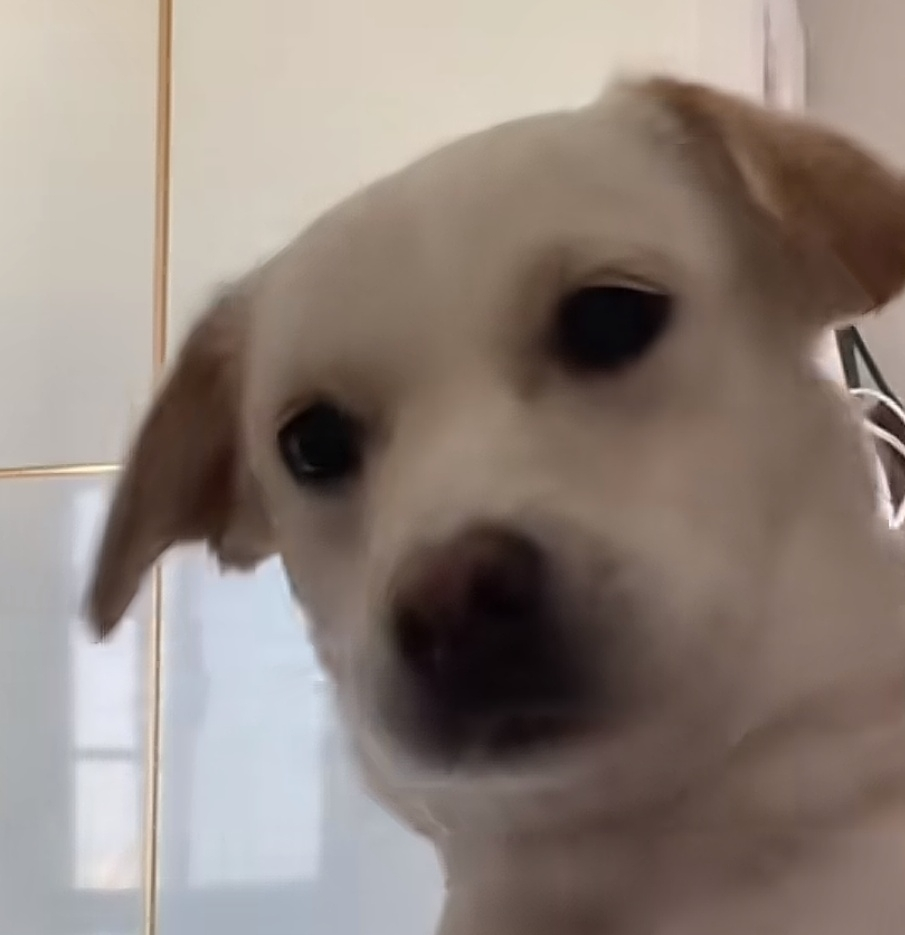
这好像世界第一左边锋😨😨
看来这只猫的实力不在我之下
这给孩子揍的不轻啊 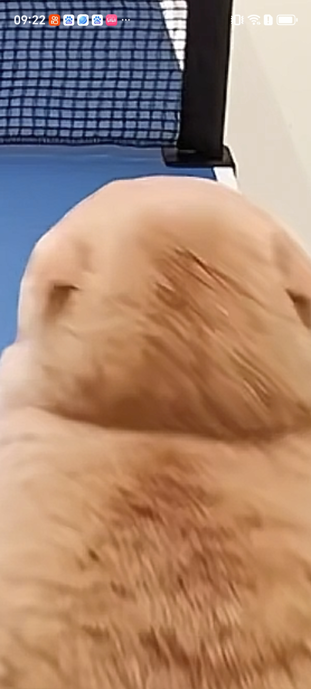
坏了，我连猫都打不过
这一脚踢得很准，加分 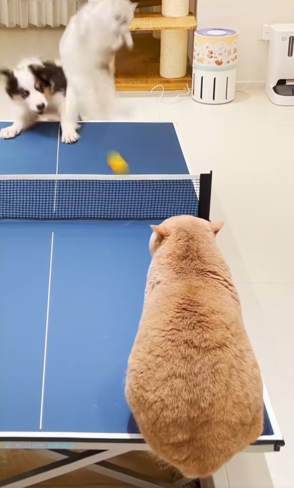
别人都是假的，只有你是真拍上厕所[不失礼貌的微笑]
主包你分享欲不要太强
谢谢小猫，让我人生第一次看到女生拉粑[玫瑰]
它嗓子好像玩具发动机拉链[黑脸][黑脸][黑脸]
一直以为是：天葩飞渡广寒宫，偏偏清香应碧空。 因为我觉得黛玉死了是解脱，她终于还了泪要去当天上的花仙了
一个文臣一个武将 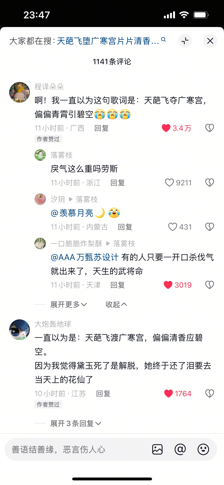
差点就忘了宋体最开始也是人写的
我个人觉得这种字体加上并不均匀的琢磨，有一种天生的be感
已开户[憨笑]
啊！我一直以为这句歌词是：天葩飞夺广寒宫，偏偏青霄引碧空[流泪][流泪][流泪]
我时常忘记先有的手写字，后来才有的印刷体[泪奔][泪奔][泪奔]
我勒个豆，什么牌子的打印机
绝对演绎最近是怎么了，之前都要凉透了，我一度以为都要关服了，怎么突然联动曲火了[宕机]
天葩飞堕广寒宫，片片清香引碧空。 髣髴众仙弹法曲，紫箫吹歇月朦胧 全文也好美
这个字体感觉好像打开了红楼梦的原本一样…[宕机]
天哪看起来好像上美影电影开场和结尾会用的字[流泪][流泪]
像经文里的字，折页那种道经
80后出来证明一下，就是司马光砸缸[机智]
我姐是博士，辅导她上二年级的儿子学习，现在找了一群家长在和出版社打官司[笑哭][笑哭][笑哭]
这都能忍住不呱一声
欧阳锋：后继有人啊～后继有人哈～后继有人哇！
呱~ 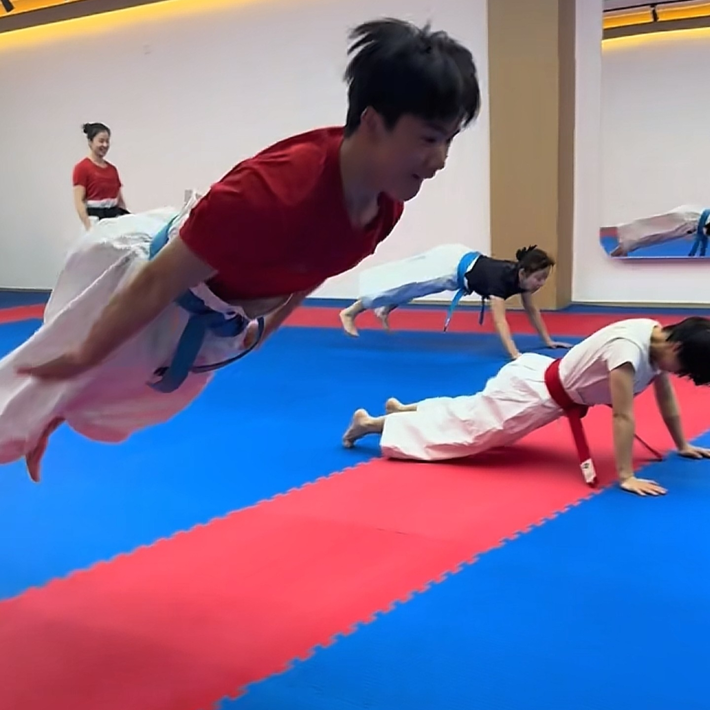
人版奥特蛙⊙∀⊙！ 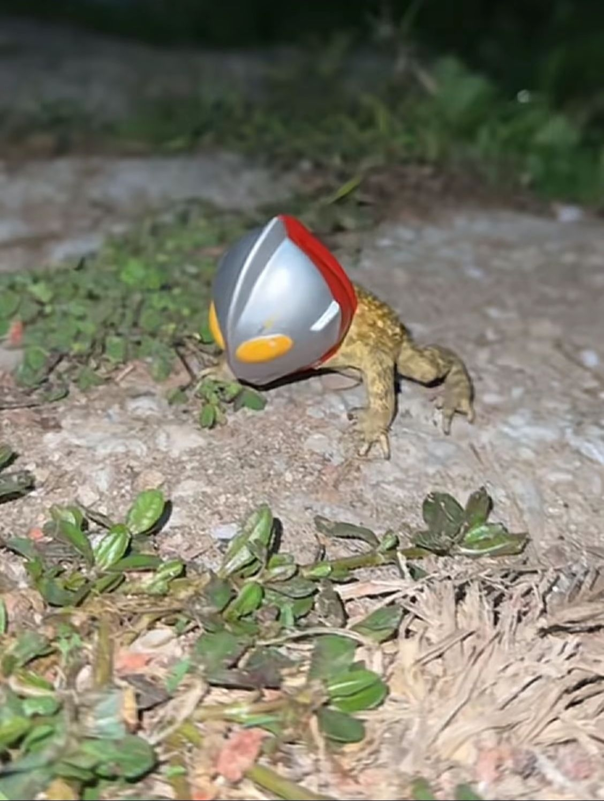
他居然跳出了滞空感[宕机]
答应我，以后变丧尸了先去啃新疆人，因为新疆昼夜温差大，甜[呆无辜]
厉害厉害[冷漠] 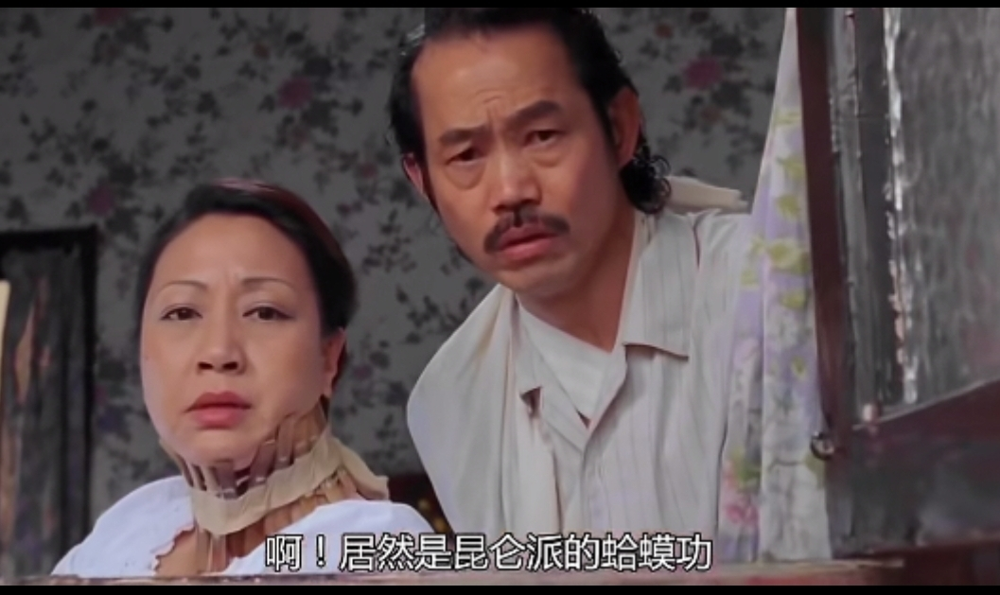
好喜欢这种鼓手，一点架子都没有[比心]
我卖的是乐器？ 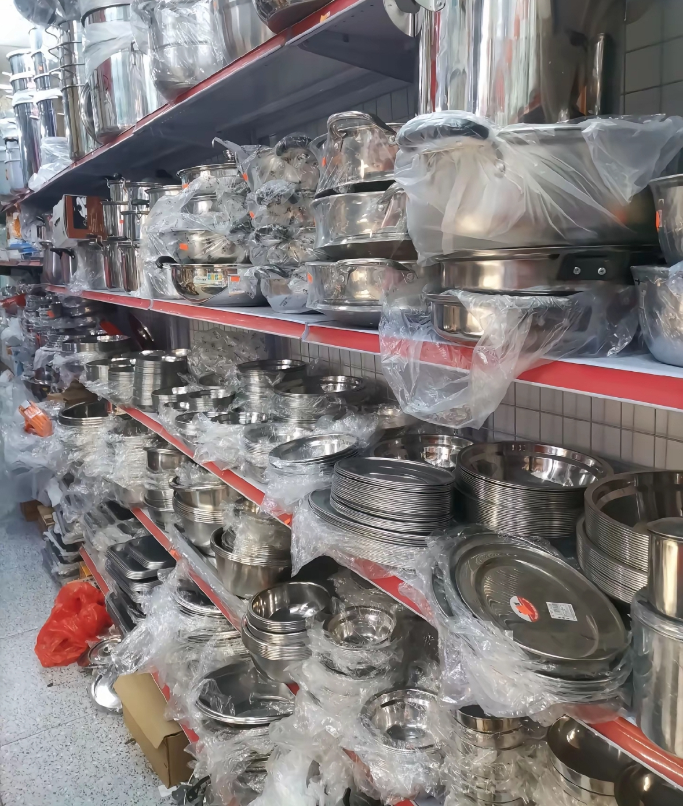
光看你了 把我儿子都倒出去了
只有我好奇…这是验孕棒吗？？真像啊 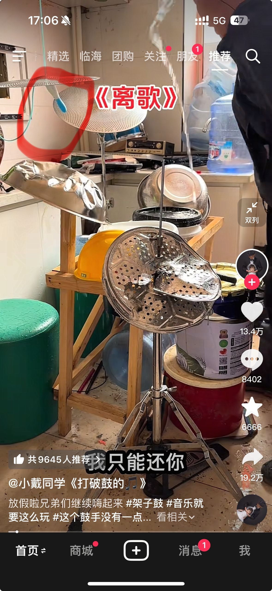
气氛都到这了，那我就配点西餐吧。 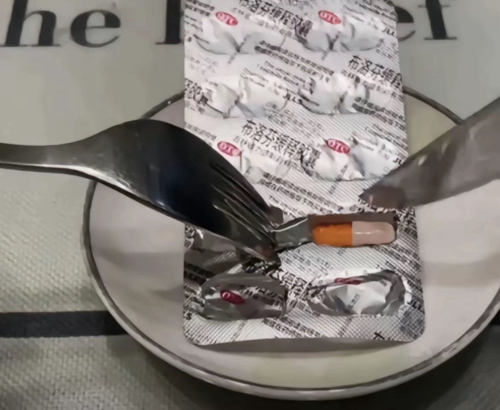
至此已成艺术 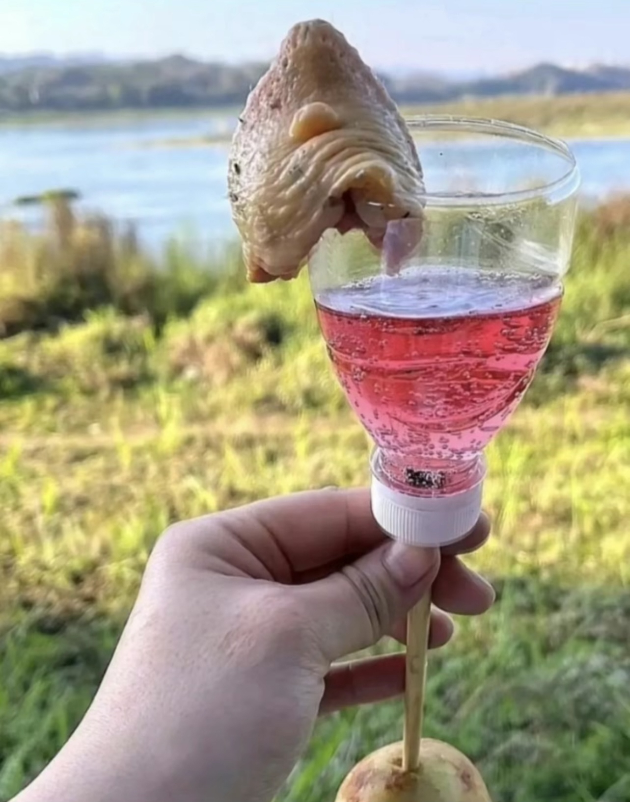
儿子说要学萨克斯，要买个六七千的。看完视频后，我给买了个口哨
多年前的妈妈：儿子你喜欢就学，妈妈砸锅卖铁也供你
这个活非常吃技术。如果撒稀了那么就稀了。万一撒稠了那么就稠了。
你居然不爱我了这个系列真的给我看死了，周深一直在强调要爱自己[逞强落泪]
这冲浪速度 他也会看这个系列偷偷哭🥹
在你居然不爱我了这个系列里，最让人心疼的是你居然忘记了好好爱自己[泣不成声][泣不成声]
周深就是这样，会一直提醒你要好好爱自己，云裳羽衣曲接小美满也太感动了[流泪][流泪][流泪]
这首最近爆火[泣不成声]原唱周深竟然唱现场了[泣不成声]
不断的提醒我们要好好爱自己，也就周深了吧，好感动人生中遇见周深这样的人。
《小美满》接在《云裳羽衣曲》之后，周深太温柔了[爱心]
这个系列的视频差点把我看死了
宝贝希望大家都可以幸福，大家要好好爱自己[流泪]
忘不了这个，给我笑成转转二手华为三折叠了[泪奔] 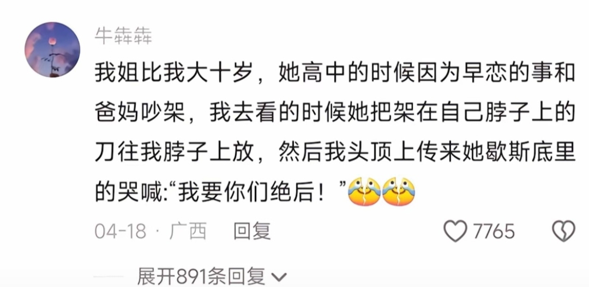
今天不emo了，因为
天啊第一次见这么大耳垂的
好像鸠摩智
“他们只是拍了一部戏而已，到我们留下的却是青春”[泣不成声]
你用仙三的歌配仙一的文案好大的官威啊
[九转大肠]
南方，人养的小小的，四害养的大大的
不知道的搜索一下白额高脚蛛，这是南方最常见的大蜘蛛，是益虫，吃完人自己就走了[送心]
之前在家里看见白额高脚蛛我爸妈让我别管还说它比你有用[憨笑]
广西最大的蜘蛛有半个空调这么大了，没开玩笑，我见过[捂脸]
没见过的看一下 评论区找到的[憨笑] 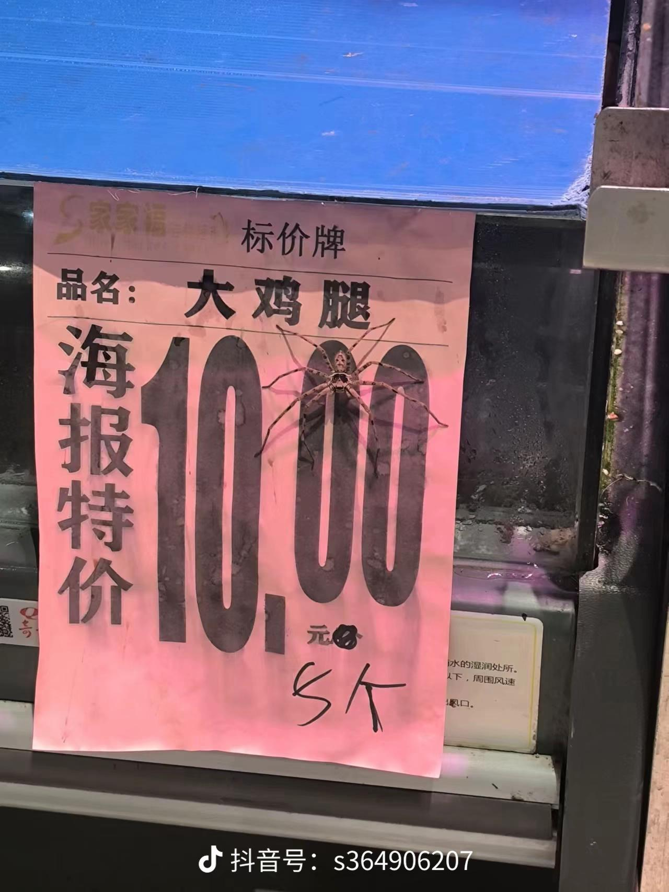
北方蜘蛛这么大甚至更小[憨笑] 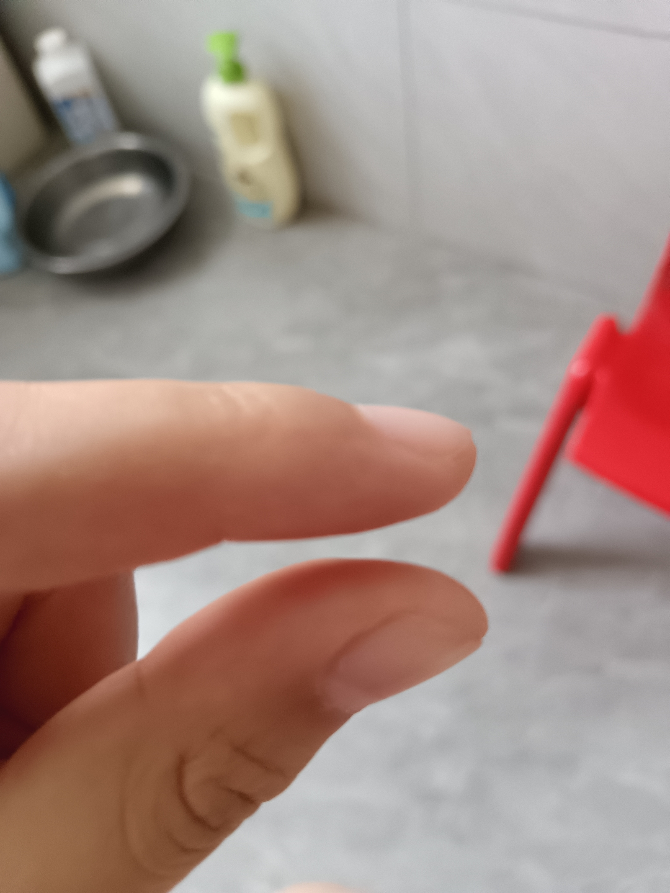
南方蜘蛛有多大，就这么说吧，如果在安静的情况下，你能听到它爬来爬去的声音[憨笑]
到底多大[疑问]谁有照片
南方除了人，都好大只
看了评论区，南方蜘蛛这么大是不是可以清楚的看到他的眼睛[九转大肠]
咋会不认识你呢，但是你的歌真没听过哈哈哈
一首都没听过，但是那首春泥经常听[捂脸]
就冲她能写出《春泥》这首歌，我就服她是个才女[赞][赞][赞][赞]
自己消化情绪是这个[赞]
你怎么哭了 这不是你梦寐以求的长大吗[暗中观察]
哈喽 我是本人 听到了吗 我是本人[憨笑] 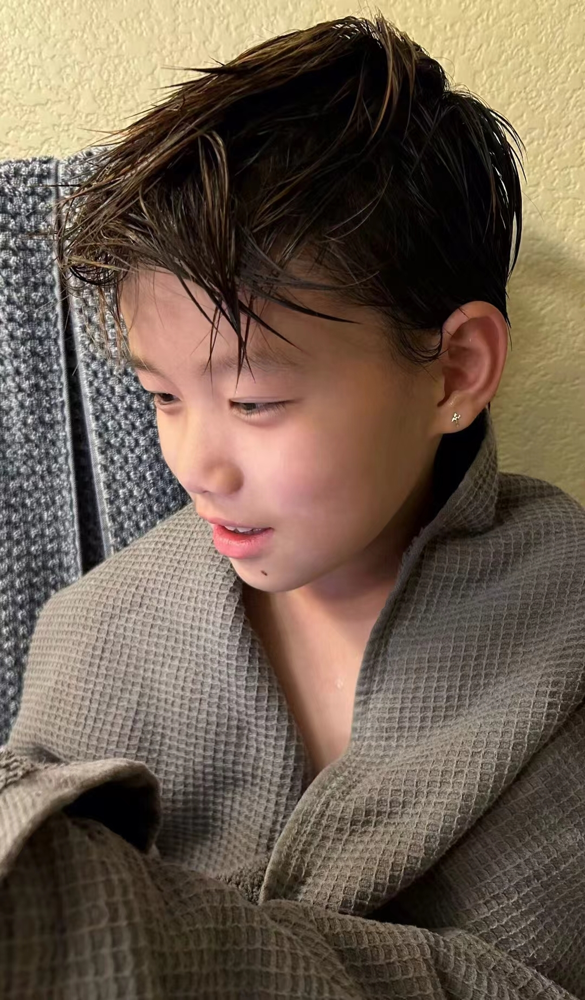
豆包家族 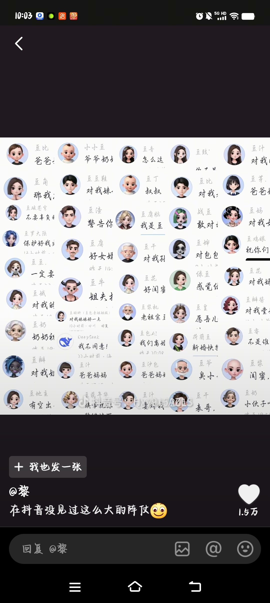
豆奶
豆包，还剩37天怎么才能考上清北[流泪]
长大后，小杨桃对男朋友说：我跟你讲，我小时候…. 男朋友说：我刷到过[抱抱你] 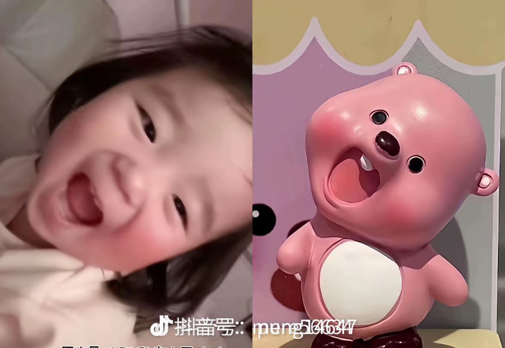
这次没有要藏肚肚呢[可怜][可怜] 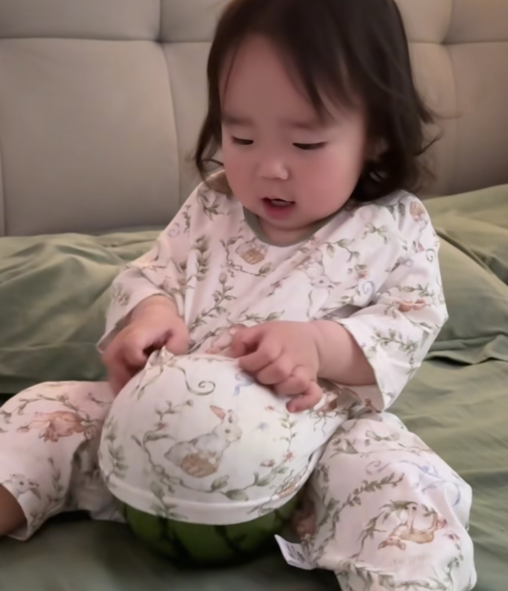
白猫浮绿水
猫猫被他救得狂喝好几口水
猫：孩子死了你知道奶了 大清亡了你知道上朝了 咪咪我快上岸了你知道来救了
救生员：坐了快两年了 今天终于下去救了只猫
关键是大家都在喊小猫加油[黑脸] 今天真特别好笑[黑脸]
救生员的作用是近距离看小猫游泳[玫瑰]
這救生員怎麽游出了快溺水的感覺.....
本来没喝多少水[黑脸]救生员扑腾两下给扑水里喝两口
[捂脸] 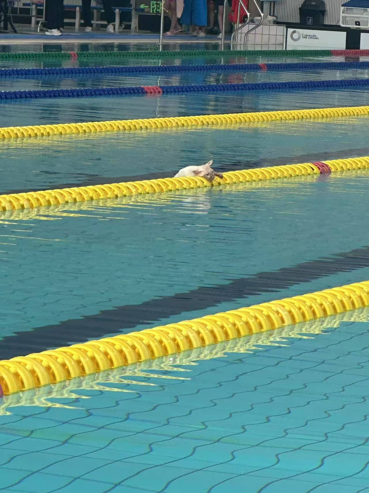
后面那个多余的人是谁？？
贝壳醒来发现自己掉榜二了[捂脸] 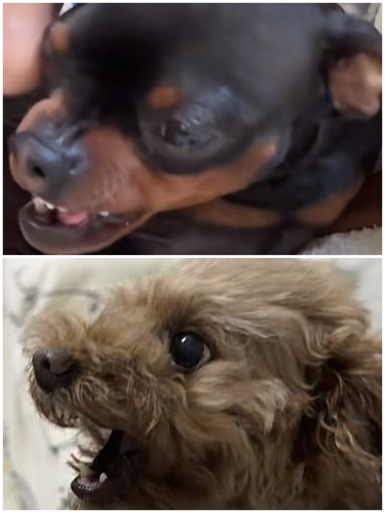
尊敬的力帆车主，您的裤头子掉了
力帆车主想装一波，没想到下巴掉了[泪奔]
人还在那蹲着，就这么开过来，真是素质高。。。
很符合力帆车主的形象[赞]
大橘：死眼，快瞎啊 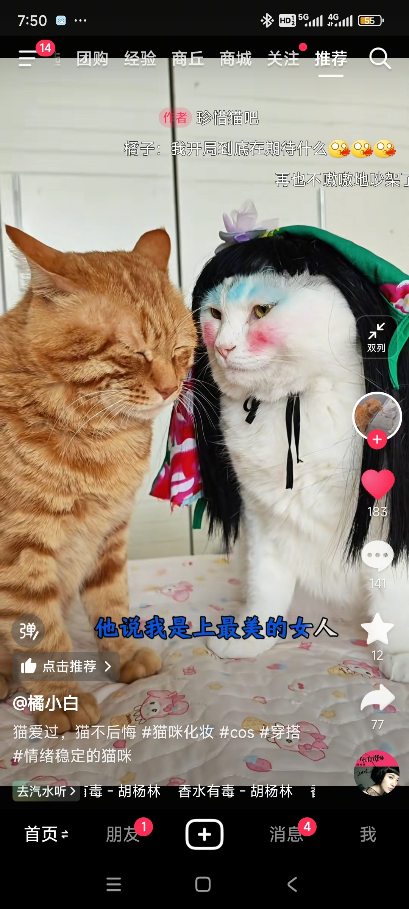
你睁开眼睛看看我，我不信你两眼空空[捂脸][捂脸] 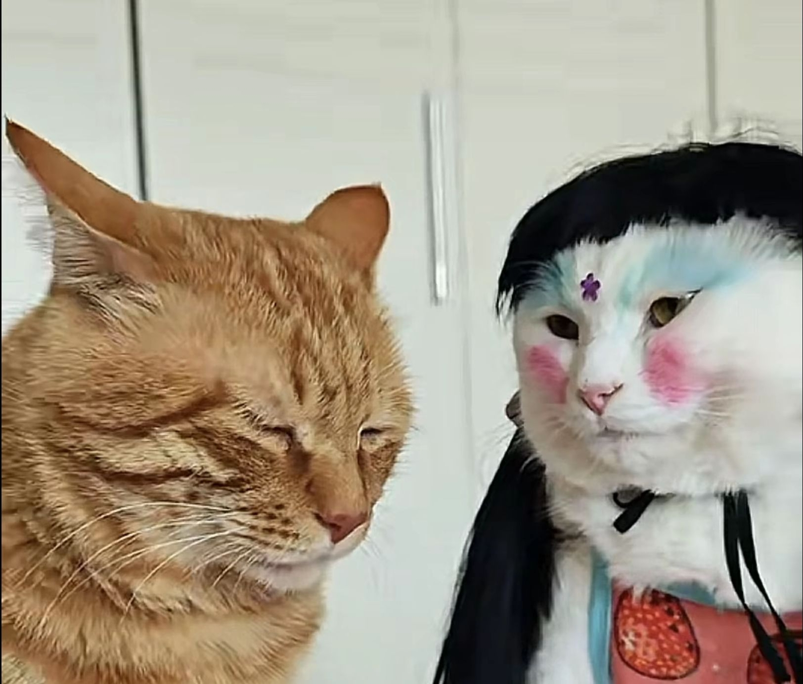
这下两个不打了也不吵了，看都不看了[九转大肠][九转大肠][九转大肠][大笑]
你这个是赛级的吗脑袋好大
挨打之后版脸色给我呢[比心] 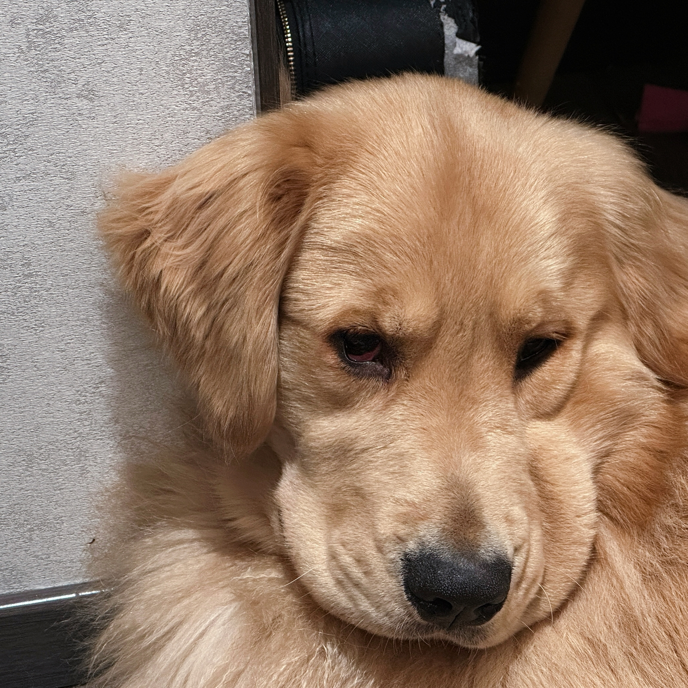
🦮：老登…一会儿吃口💩再来👅你 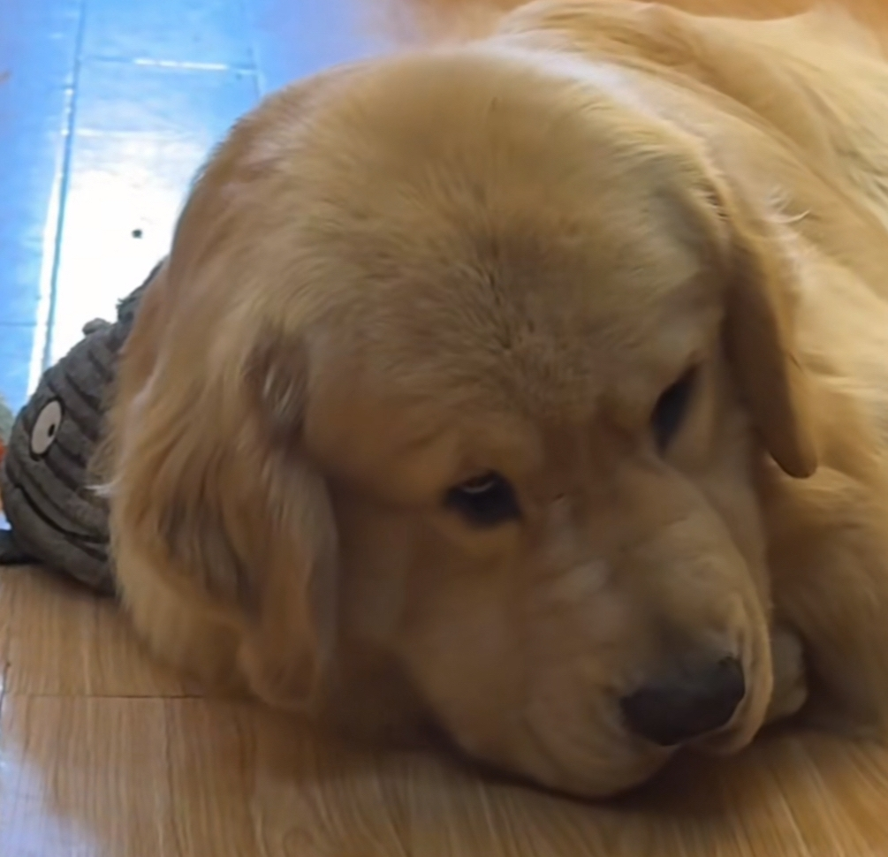
大大的脑袋里面藏了无数东西哈哈哈哈哈
比我家宝贝脑袋还大[捂脸][捂脸] 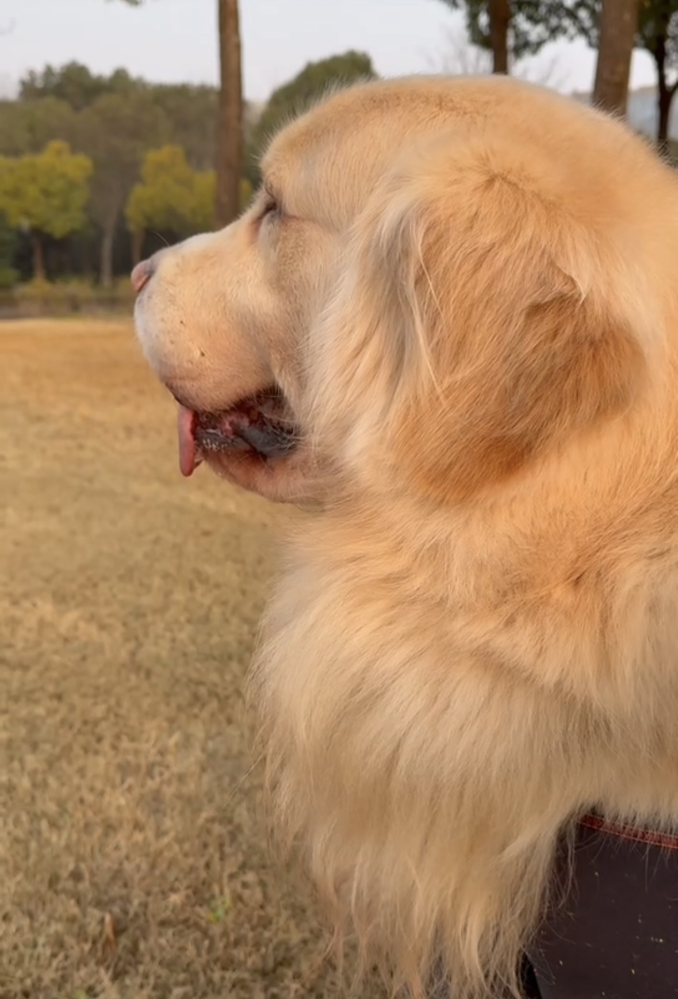
我第一次知道裸贷毁了很多女生的时候就是在普法栏目剧里，那年我四年级，已经很久没有看过电视了
小时候以为普法栏目剧是恐怖片[听歌]
普法栏目剧，女a被拐卖了，男a是警察，解救途中女a在村民家地窖，男a就在地窖上但是没发现，女b又被绑架了，此时女a已经心灰意冷并且性格扭曲了，好像是女a绑架的女b，但是男a把女b救了[投降]女a最后自杀了[流泪]当时bgm好像就是这个
啊！姐姐真的唱了这首歌，想起了小时候跑回家看普法栏目的时候[逞强落泪]
普法栏目剧对小孩子来说简直就是恐怖片啊 小时候根本不知道什么是人生 看的时候总觉得即使是主人公慎重做出的选择也可能让他们随时完蛋
《普法栏目剧》有一个我真想不起名字了，当时给我吓得不轻。。我记得的部分大概就是一个女生a追班车，但班车没有停，a走向了马路下面也就是她右边的一个小路，我记得有竹林，天色越来越晚，然后她被一个男的b盯上了，下起大雨，a被侵犯了。然后a醒来之后就跑到一户人家。那户人家竟是b的家，家里此时只有b的妈妈和妹妹。b的妈妈给a安排和b的妹妹一起睡。b回来发现a在她家，就想把a杀了。起先a睡在床上，b的妹妹睡地上，a发现b在磨刀想杀她。a就把b的妹妹放在床上，地方的铺上则放着枕头什么的当人，a则躲在柜子里。然后b把自己妹妹杀了。a连夜跑去报警。第二天b挖坑埋人发现自己杀的是妹妹。
普法栏目剧是真的很真实，现在回去看演员都是那些很贴近普通人的，不会有滤镜美颜特别重的特效什么的
普法栏目印象最深弟弟谈了一个漂亮的女朋友，结婚那天晚上，男的父母以死相逼让弟弟把女朋友让给哥哥（有点傻子病），弟弟就抛下了女朋友，那个女孩就被困了很多年生了孩子，偷跑去报警还被哥哥拉回来打，后来弟弟又谈了一个女朋友终于再一次回家，那个女孩以为看到了希望，结果看到自己曾经的爱人有了新的爱人绝望了，她就把一家人全毒死了，她自己死在了弟弟的怀里[流泪]
第一次知道女孩子被拐进大山的遭遇是普法栏目剧里面的呈现出的真实又又吓人，愿天下无拐！
我唯一记得的一个普法栏目是女方家里不满意男方，于是女方要和男方分手，男方就用菜刀架在女方脖子上，逼女方脱到只剩内裤和他一起站到那种瓦片的屋顶上，被一群人围观。虽然贞洁清白什么的无足轻重，但我想流言蜚语可以杀人，希望她远走高飞，有幸福的未来
欢迎收看《普法栏目剧》，今天我们继续讲“莲花闹海棠”
小时候看普法栏目剧，以为演员都是监狱里的犯人演的[黑脸][黑脸][黑脸][黑脸]
我以为看普法栏目剧是我个人，没想到好多人都看！
《莲花闹海棠》《卧底》《听见凉山》[流泪][流泪][流泪][流泪][流泪][流泪]和爸爸妈妈坐电视机前看[流泪]
古镇奇谭系列真的比鬼片吓人了 有没有人懂
就冲这份激情，这汉子绝对是国家队水平
谁懂第一首出来的瞳孔地震[憨笑]
好消息全听过，坏消息全算在洛少爷头上了[捂脸]
听之前：谁啊好大的口气[憨笑] 听到第一首：
姐们儿你是中国人啊[黑脸]
我一直以为唱这些的是日本歌手[苦涩]
这群老家伙怎么突然集体复活了
yellow这首我喜欢了五年了啊！！[你不大行]
眼睁睁的看着主播从大网红变成小透明[憨笑][鼓掌]
你们怎么都开始漏脸了[捂脸]
第1个我还真以为是日本人唱的
你是说我18-22年的歌单都是你？[憨笑]
快接商演吧 我两个电棍都充好电了
陕北唱法
又是艳阳tia🫦
听得出来主播是会唱的 只不过在故意搞怪[爱心][比心]
很标准的抖音唱腔啊，真的不考虑接一下商演吗
您好 我是中国差声音栏目组的 希望您能加入我们[玫瑰][比心]
又是艳阳袁娅维
烦死了 每次看到你们这些模仿的都忍不住刷一遍原视频 然后就更难受了[流泪][流泪][流泪]
是这个吧[憨笑][憨笑][比心][赞] 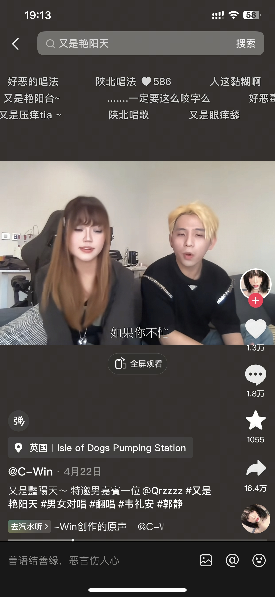
我现在听到这首歌都有点害怕
也其实就是相当于省了学费
闺蜜我跟你说...算了说不清，你自己看吧
节奏和这个后面的鱼缸灯好配合
网瘾很大的古风老兵。
古筝，军装，手办，赛博机箱……… 鉴定完毕，有网瘾爱收藏的公兵【公子老兵】[憨笑] 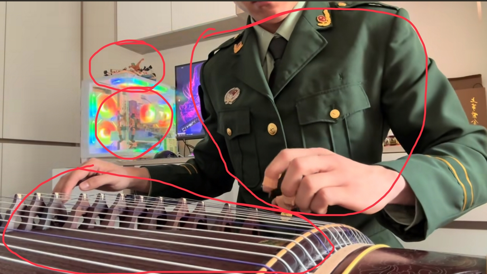
就这种感觉[憨笑]
我不行了[憨笑]
《今天政委不在家》
军装，古筝，赛博机箱……有一种林黛玉扛枪战场杀敌的感觉
这一下不知道是该蹦跶、还是该扭、还是该立正了…
咋[泣不成声]突然想扭起来了 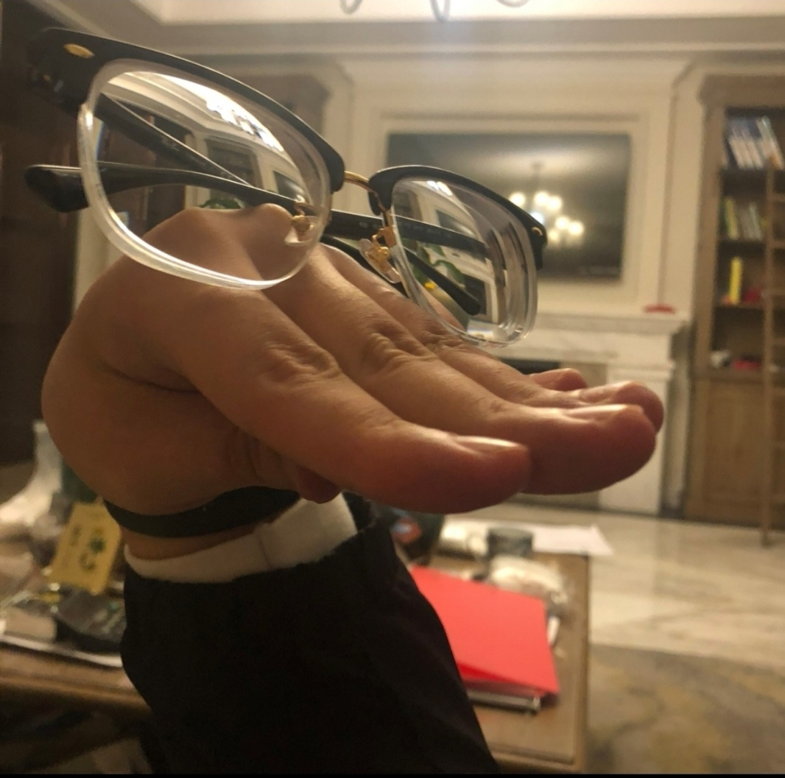
老兵古筝
赛博古风老兵[赞][憨笑]
元素太多了哥[宕机]我一时有点无法融合
部队送你去，弹古筝了啊。
欧哟 会谈古筝的网瘾军人
佐罗和艾斯吗？爱打点游戏的二次元古筝老兵[憨笑] 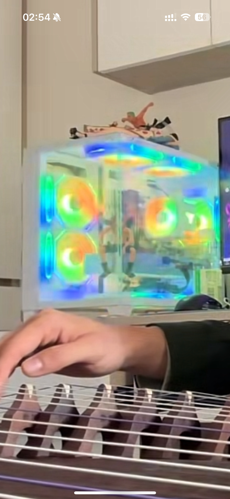
[憨笑]
甚至歌都要唱完了，试卷还没发完
可是她写完了[愉快]
你别套了先，你脾胃不好 先去看看中医吧[泪奔][泪奔]
沐言不要再哭了，后面还有几何，三角函数，定积分，不定积分，导数。。。[偷笑][偷笑]
据说大家看她平时玩的太开心了 把这个放出来 其实也有很多不开心的时候啦
母爱不知道能维持到几年级[捂脸][捂脸] 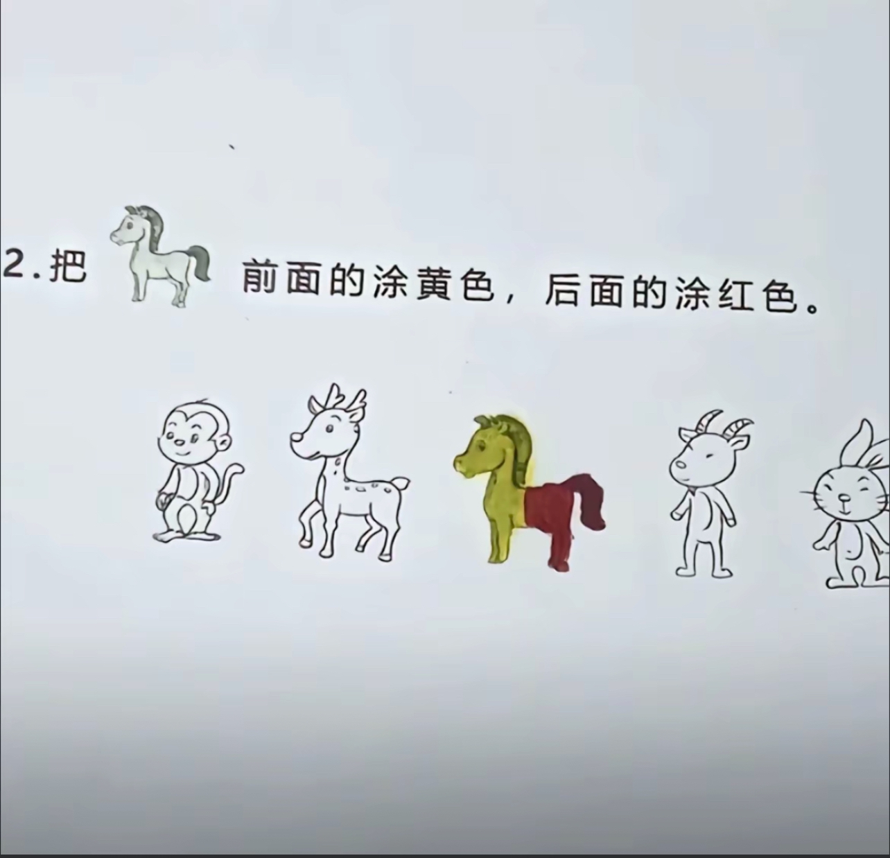
我儿子写的，肺都气炸了[吐血] 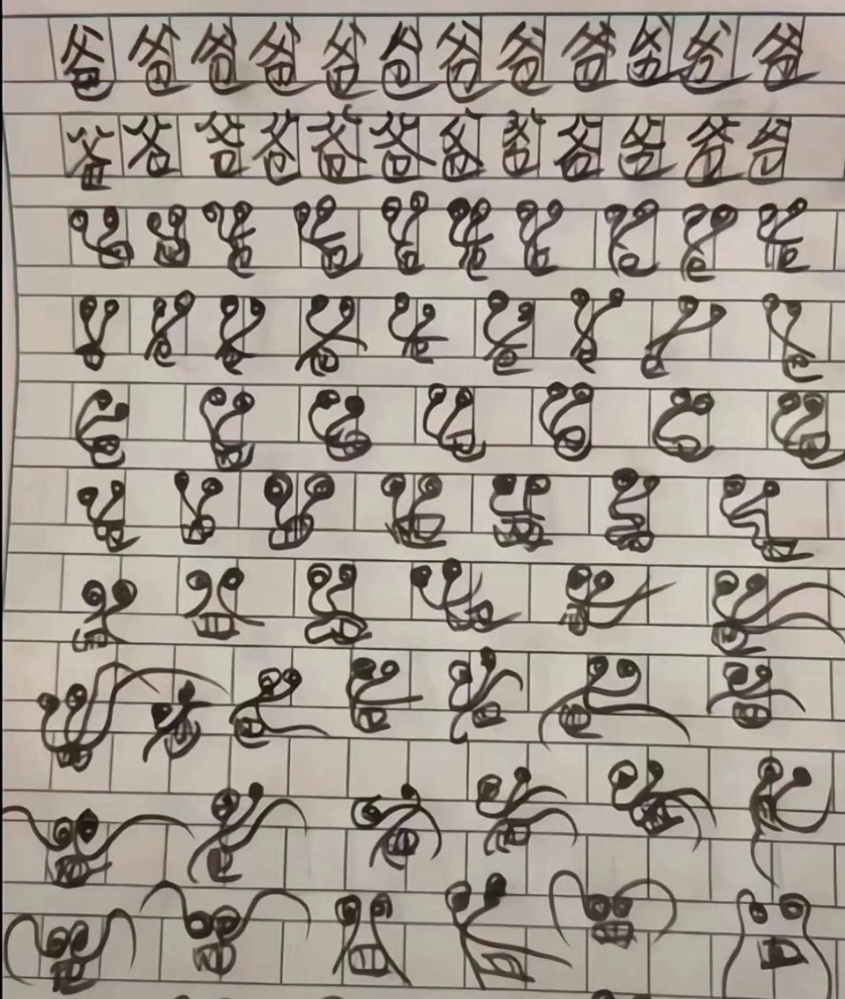
同样的桌子，明明刚刚还在开心的拆盲盒的呀[流泪]
天赐你改名字吧，抖音热歌大汇总
内娱乐火一个姚晓棠怎么了！！！！！！
Read more: